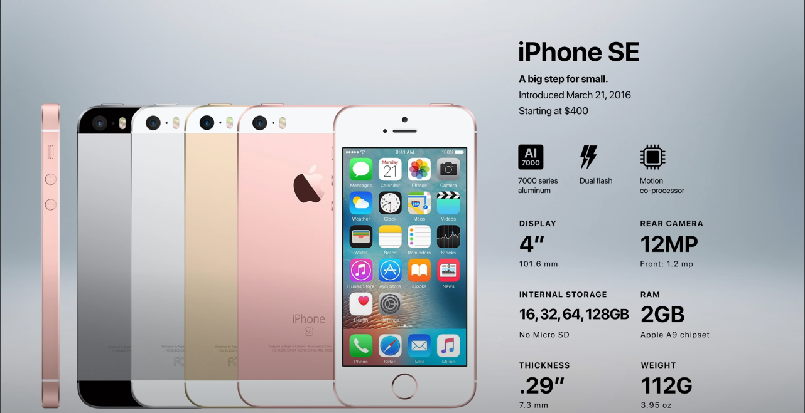

Generation 10: iPhone SE
iPhone SE Release Date March 31, 2016
Apple released the iPhone SE six months after the iPhone 6S. The SE was not a new kind of phone, but rather an upgraded version of the iPhone 5. It had the same 4-inch screen as the iPhone 5, but it had a faster processor, a better camera, and longer battery life. The iPhone SE was popular because it gave people who wanted a smaller phone a choice other than the iPhone 5S. It was also a good option for people who wanted a more affordable iPhone.
Specification
- 4-inch screen
- 4.0 ounces (second lightest device in iPhone history)
- A9, dual core, 64-bit, 1.83 GHz processor with 2GB RAM
- 12-megapixel rear camera/li>
- 1.2-megapixel front camera
- iOS 9.3
- NFC
- Bluetooth 4.2
- 24 hours talk time on 3G
- 12 hours of web browsing time on 3G
- 13 hours of web browsing time on LTE
- 13 hours of battery life on WiFi
- 13 hours of battery life for videos
- 50 hours of battery life for just music